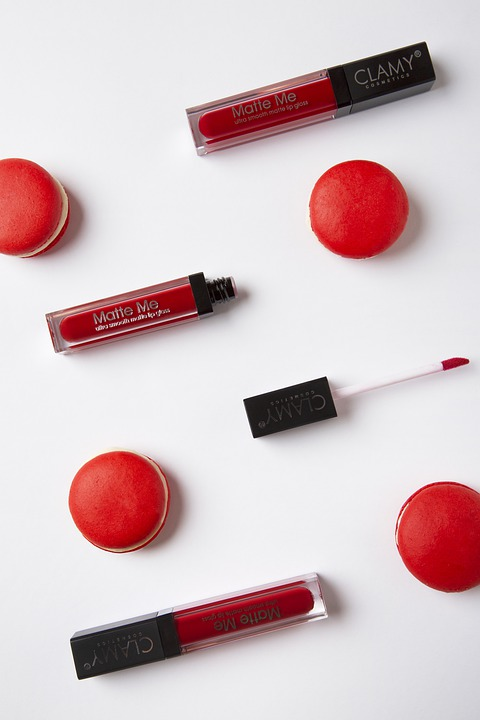

| Foto |
Descrição |
Preço (R$) |
Quantidade disponível |
 |
Paleta de Sombras |
Sombras com alta pigmentação, textura macia e aveludada para um olhar marcante. |
3 |
|
Batom Mate |
Batom que traz intensidade ao look com lábios coloridos, marcantes e saudáveis. |
12 |
|
Pó Translucido Compacto |
O pó translucido possui uma textura ultrafina que matifica a pele instantaneamente. |
10 |
|  |
Batom Líquido Mate |
O batom líquido mate confere uma cor intensa, uniforme e duradoura com aquele efeito opaco que tanto
amamos. |
6 |
|
Corretivo |
O corretivo disfarça bolsas e olheiras com sua ação antifadiga prolongada. |
2 |